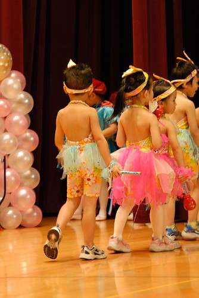

這次表演果然又如往年般的在阿徹刻意的神秘下給了我們大大的驚豔
尤其舞蹈班的表演中拍檔是Jessica這大事
阿徹竟然在表演前都隻字未提 保密功夫做的很到家
可真難為了平日很愛碎碎念 閒著沒事就愛拉賽的阿徹
看著阿徹兩眼發亮的 認真的 忘情的與心愛的人共舞
我跟徹爸兩人也感受到那濃濃的幸福味阿 哈哈!!!
看完舞蹈表演 徹爸說”我對阿徹今天的表演很滿意 這是我一次感受到阿徹認真的表演 而且沒有慢拍”
果然就像人家說的”認真的女人最美麗” 認真的小孩也才得人心阿
只是ㄚ…看到阿徹第二次上台時的音樂表演
舊態復萌 甚至木魚敲著敲著還忍不住打了個哈欠
唉…有一種很嚴重”落賽”的感覺….
我們真的懷疑剛舞蹈表演時的阿徹只是愛情滋潤下的異常表現
看著與阿徹一起從寶寶熊念上來的Thomas與Apple成熟許多的表演與表情
我真的很想從我們家阿徹的頭上給他扒下去
『阿…你是猴子投胎轉世的喔?!?!』
猴性難改阿……
以下就來看照片說故事吧…
這是舞蹈班表演前在台側satndby 造型給他很帥氣喔
尤其早上剛去剪了一頭清爽短髮加上阿姨精心抓的五彩繽紛頭
舞台效果十足啦….不過與其他小朋友相較之下似乎過顯隆重了
阿姨說上台就是要給他閃亮閃亮啦~~~
上了台後 我趕快”報”徹爸看 阿徹旁邊站的就是Jessica (就是阿徹朝思暮想想要結婚的對象啦)
然後徹爸就也很high的直叫阿徹與Jessica 合照一張 (難得可以有這樣的親密合照機會ㄇㄟ)
於是阿徹就熱情的一直往Jessica靠過去 甚至還用手拉著 Jessica要照相 ( Jessica當下應該覺得很莫名其妙)
相是照到了 不過阿徹一整個的走位了
讓已經尋過一輪回頭的舞蹈老師一臉驚訝的把阿徹拉回他本來該站的地方

今天舞蹈表演的曲子是馬德里不可思議 輕快俐落的舞蹈表演就要開始嚕….

阿徹這回除了沒有慢拍外 嘴巴還可以跟著唱和著
全身上下 裡裡外外都給他有融入到舞蹈中了喔
而且沒有東張西望看別人
自己好像真的知道接下來要做什麼動作了
看到阿徹與她的搭檔有這麼多的互動 我與徹爸兩老High到一整個不行 (真不知道我們在爽什麼的)
尤其這一幕…恩愛阿…經典阿…. 可惜沒照到阿徹的正面…
數十年後假若阿徹真能俢成正果這些照片可真是價值連城阿 (我們真的是想太多了)

隔了幾個節目後 第二次準備上台音樂表演
看到阿徹班上的服裝 我忍不住跟徹爸說
別班都穿的很像隆重或是很帥氣的各式王子裝扮
怎阿徹班上的這套服裝卻像是泳衣一般阿 (要突圍也不是這樣子…)
不過這套花仙子造型服 據聞阿徹班上的每一個小朋友可都愛死了ㄋ 
阿徹拿的樂器是木魚 感覺他不是太喜歡的樣子
發表會之前每天在家都會很怡然自然的一個人走著走著就翩翩起舞了起來
可是對於樂器演奏的事除了聽他說過是拿木魚外 就很少聽他多說些什麼了

小孩子真的不要養太大隻 小隻點表演時才可以卡第一排 比較搶鏡阿
原本死氣沉沉的木魚被變身的像是加油棒

可是阿徹敲著敲著竟然兩眼迷濛了 甚至還忍不住的打了個大哈欠
這…這..真是太放空 太扯了吧…
我想音樂與舞蹈之間 阿徹應該是愛舞蹈多很多的
總算退場嚕~~要不然阿徹大概會在台上睡著了
瞧~~~男生女生都露了美背…清涼阿

音樂會的最後一如往年是老師們的表演
因為老師們要讓學生知道 不是只有小朋友要辛苦練習 老師們也是有辛苦練習要表演給他們看的喔
阿徹很愛老師們的華麗宮廷風裝扮
可是即使Freda平日對他再好 男生裝扮就是不對阿徹的眼
要阿徹跟Freda合照一下 阿徹還頓ㄉㄟ考慮一下
而且兩眼直望著一旁穿著女生大禮服的kitty媽咪

跟kitty媽咪合照時便二話不說的笑瞇瞇湊過去
難怪Freda直呼”沒良心的阿徹 見色忘義” 
接近2個小時的表演結束後 小孩子總算解散回到父母身邊
果然…前一晚打預防針後早上發燒的小愛已經小臉燒燙 兩眼發昏
回家洗澡吃飯後 兩人早早七~八點就上床睡覺了
看來表演這事真的挺勞心勞力的…辛苦小人兒了….
你們真的很棒喲~~~